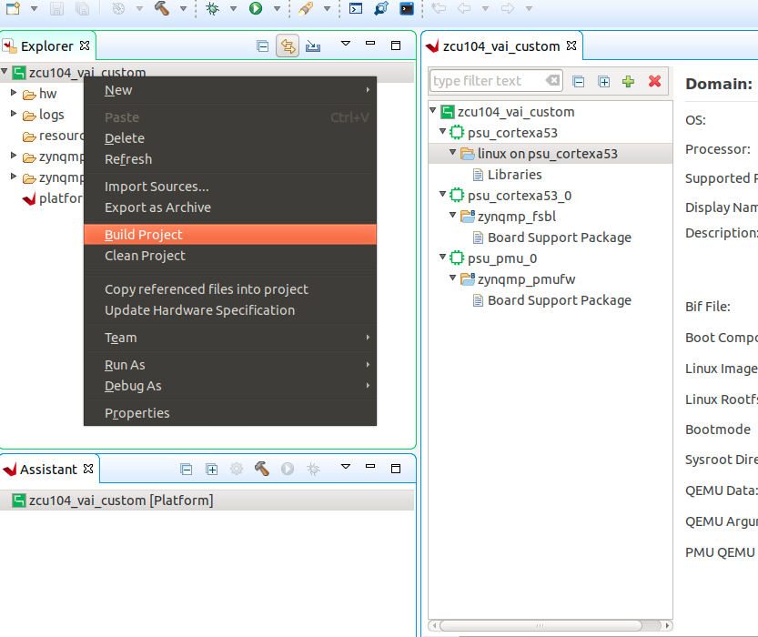
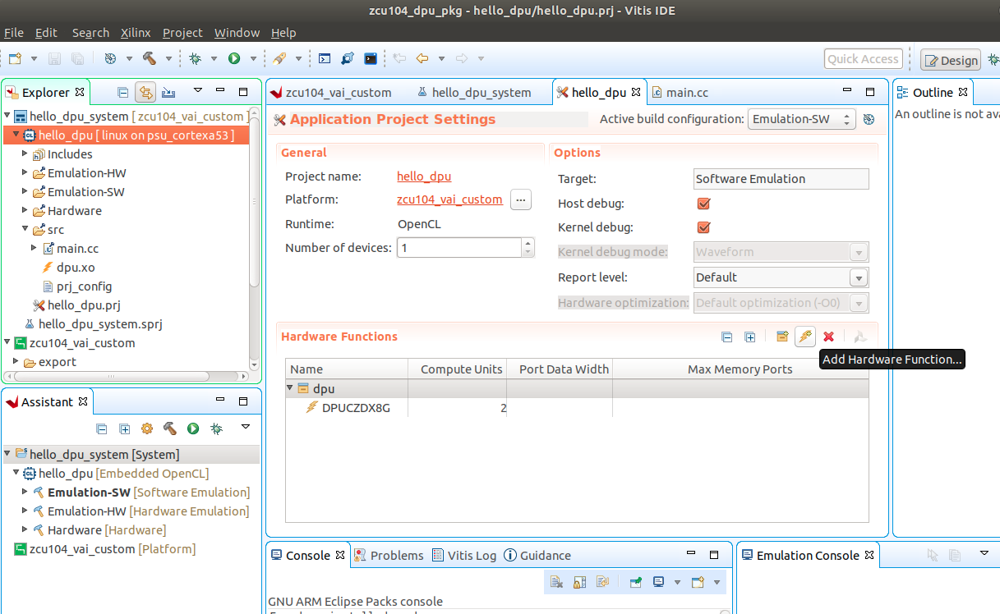
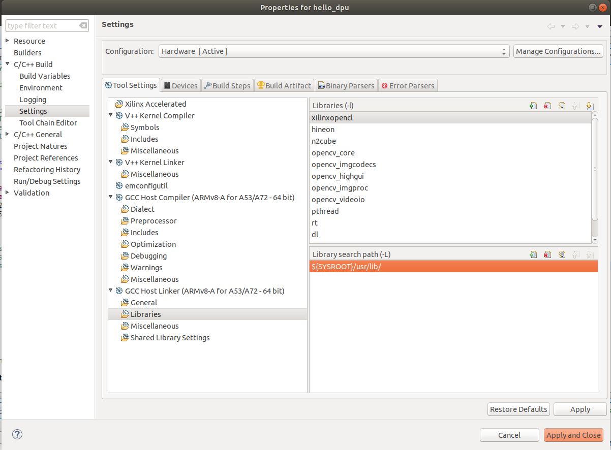
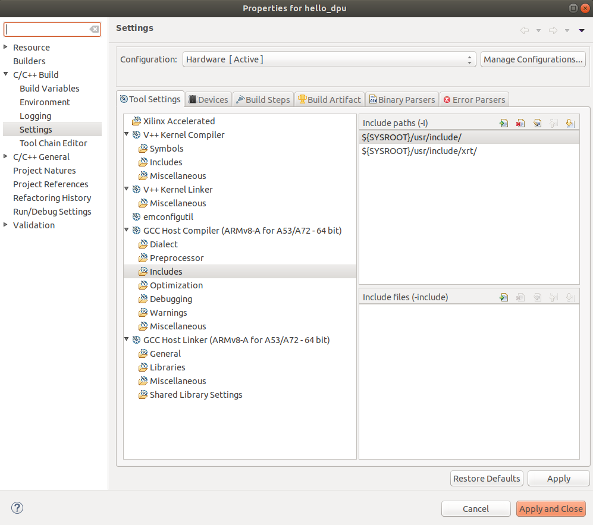
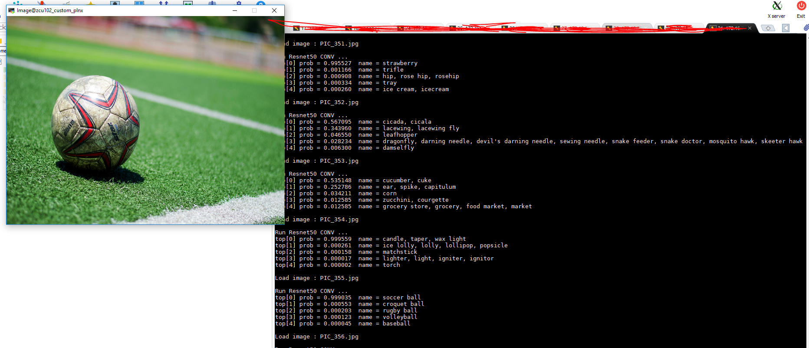

Step 4: Test the Platform¶
Test 1: Read Platform Info¶
With Vitis environment setup, platforminfo tool can report XPFM platform information.
# in zcu104_custom_pkg directory
platforminfo ./zcu104_custom/export/zcu104_custom/zcu104_custom.xpfm
==========================
Basic Platform Information
==========================
Platform: zcu104_custom
File: /scratch/rickys/work/idt_platform/zcu104_custom_pkg/zcu104_custom/export/zcu104_custom/zcu104_custom.xpfm
Description:
zcu104_custom
=====================================
Hardware Platform (Shell) Information
=====================================
Vendor: xilinx
Board: zcu104_custom_platform
Name: zcu104_custom_platform
Version: 0.0
Generated Version: 2020.1
Software Emulation: 1
Hardware Emulation: 0
FPGA Family: zynquplus
FPGA Device: xczu7ev
Board Vendor: xilinx.com
Board Name: xilinx.com:zcu104:1.1
Board Part: xczu7ev-ffvc1156-2-e
Maximum Number of Compute Units: 60
=================
Clock Information
=================
Default Clock Index: 0
Clock Index: 2
Frequency: 100.000000
Clock Index: 0
Frequency: 200.000000
Clock Index: 1
Frequency: 400.000000
==================
Memory Information
==================
Bus SP Tag: HP0
Bus SP Tag: HP1
Bus SP Tag: HP2
Bus SP Tag: HP3
Bus SP Tag: HPC0
Bus SP Tag: HPC1
=======================
Feature ROM Information
=======================
=============================
Software Platform Information
=============================
Number of Runtimes: 1
Default System Configuration: zcu104_custom
System Configurations:
System Config Name: zcu104_custom
System Config Description: zcu104_custom
System Config Default Processor Group: linux_domain
System Config Default Boot Image: standard
System Config Is QEMU Supported: 0
System Config Processor Groups:
Processor Group Name: linux on psu_cortexa53
Processor Group CPU Type: cortex-a53
Processor Group OS Name: linux
System Config Boot Images:
Boot Image Name: standard
Boot Image Type:
Boot Image BIF: zcu104_custom/boot/linux.bif
Boot Image Data: zcu104_custom/linux_domain/image
Boot Image Boot Mode: sd
Boot Image RootFileSystem:
Boot Image Mount Path: /mnt
Boot Image Read Me: zcu104_custom/boot/generic.readme
Boot Image QEMU Args:
Boot Image QEMU Boot:
Boot Image QEMU Dev Tree:
Supported Runtimes:
Runtime: OpenCL
We can verify clock information and memory information are set as expected.
Test 2: Run Vector Addition Application¶
Vector addition is the simplest acceleration PL kernel. Vitis can create this application automatically. Running this test can check the AXI control bus, memory interface and interrupt setting in platform are working properly.
Creating Vector Addition Application¶
Open Vitis workspace you were using before.
Select File -> New -> Application Project.
Click next
Select zcu104_custom as platform, click next.
Name the project vadd, click next.
Set Domain to linux on psu_cortexa53, set Sys_root path to
<full_pathname_to_zcu104_custom_pkg>/pfm/sysroots/aarch64-xilinx-linux(as you created by running sdk.sh). Set the Root FS to rootfs.ext4 and Kernel Image to Image. These files are loated inzcu104_custom_plnx/imagesdirectory, which are generated in Step 2. click next.Select System Optimization Examples -> Vector Addition and click finish to generate the application.
In the Explorer window double click the vadd.prj file to open it, change the Active Build configuration from Emulation-SW to Hardware.
Select vadd_system in Explorer window and Click Build icon in toolbar.
Note: If you cannot see the zcu104_custom platform we created, we can add it to platform list of New Project Wizard by selecting the add button and point to zcu104_custom_pkg/zcu104_custom directory.
Note: If you’d like to test this application in emulation mode, plese change Active Build configuration from Emulation-SW to Emulation-HW on Step 8.
Running Vector Addition Application on the Board¶
Copy zcu104_custom_pkg/vadd_system/Hardware/package/sd_card.img to local if Vitis is running on a remote server.
Write sd_card.img into SD Card with SD Card image writer applications like Etcher on Windows or dd on Linux.
Boot ZCU104 board with the SD card in SD boot mode.
Login with username root and password root.
Go to auto mounted FAT32 partition
cd /mnt/sd-mmcblk0p1Initialize XRT running environment
source ./init.shRun vadd appliation
./vadd vadd.xclbin
It should show program prints and XRT debug info.
TEST PASSED
Test Vector Addition Application in Emulation Mode¶
Note: If you’re on Ubuntu, set environment variable LIBRARY_PATH to /usr/lib to workaround a known issue on Vitis 2020.1. It’s fixed in 2020.2.
export LIBRARY_PATH=/usr/lib
Use Vitis menu -> Xilinx -> Start/Stop Emulator to launch QEMU. Project is vadd, configuration is Emulation-HW. Click Start. Wait for Linux to boot. Log in with root/root.
Righ click vadd project (not the vadd_system system project), select Run as -> Launch on Emulator
The result will show on Console tab.
Loading: './binary_container_1.xclbin'
TEST PASSED
Test 3: Run a DNNDK Demo¶
This test will run a simple DNNDK test application to test DPU function.
Prepare for the DPU Kernel¶
Download Vitis AI by calling command
git clone https://github.com/Xilinx/Vitis-AI.git.Navigate to the repository:
cd Vitis-AI, set the tag to proper tag(here we use v1.2) by typing:git checkout v1.2.If you don’t want to destroy the TRD reference design. Copy DPU-TRD folder into another directory. For example I would copy that into my zcu104_custom_pkg folder:
cp -r DPU-TRD ./zcu104_custom_pkg/Source Vitis tools setting sh file:
source <vitis install path>/Vitis/2020.1/settings64.sh.Source XRT sh file:
source opt/xilinx/xrt/setup.sh.Export PLATFORM_REPO_PATHS with the directory of the custom platform xpfm file which you created before so that it can be found by Vitis. Here in my project it would be:
export PLATFORM_REPO_PATHS=<path_to/zcu104_custom_pkg/zcu104_custom/export/zcu104_custom>. Remember now this custom platform name is zcu104_custom.Navigate to the copy of the DPU-TRD folder, then go to the ./prj/Vitis folder.
There are 2 files can be used to modify the DPU settings: The config_file/prj_config file is for DPU connection in Vitis project and the dpu_conf.vh is for other DPU configurations. Here we would modify the prj_config so that 2 DPU cores are enabled. And then we modify dpu_conf.vh as DPU-TRD readme suggested.Modify the config_file/prj_config like below:
[clock]
id=0:DPUCZDX8G_1.aclk
id=1:DPUCZDX8G_1.ap_clk_2
id=0:DPUCZDX8G_2.aclk
id=1:DPUCZDX8G_2.ap_clk_2
[connectivity]
sp=DPUCZDX8G_1.M_AXI_GP0:HPC0
sp=DPUCZDX8G_1.M_AXI_HP0:HP0
sp=DPUCZDX8G_1.M_AXI_HP2:HP1
sp=DPUCZDX8G_2.M_AXI_GP0:HPC1
sp=DPUCZDX8G_2.M_AXI_HP0:HP2
sp=DPUCZDX8G_2.M_AXI_HP2:HP3
[advanced]
misc=:solution_name=link
#param=compiler.addOutputTypes=sd_card
#param=compiler.skipTimingCheckAndFrequencyScaling=1
[vivado]
prop=run.impl_1.strategy=Performance_Explore
#param=place.runPartPlacer=0
Here clock ID 0 is 200MHz, clock ID 1 is 400MHz.
This file describes the link connections between DPU and the platform. It will be used by Vitis application in next step.
Note: an example of prj_config file is provided in ref_files/step4_test3/app_src.
Modify dpu_conf.vh to enable URAM because ZU7EV device on ZCU104 board has URAM resources. Change from:
`define URAM_DISABLE
to
`define URAM_ENABLE
Generate the XO file by typing:
make binary_container_1/dpu.xo DEVICE=zcu104_custom.Verify if the XO file is generated here: <zcu104_custom_pkg directory>/DPU-TRD/prj/Vitis/binary_container_1/dpu.xo.
Create and Build a Vitis Application¶
Open Vitis workspace you were using before.
Select File -> New -> Application Project.
Click next
Select zcu104_custom as platform, click next.
Name the project
hello_dpu, click next.Set Domain to linux on psu_cortexa53
Set Sys_root path to
<full_pathname_to_zcu104_custom_pkg>/pfm/sysroots/aarch64-xilinx-linux(as you created by running sdk.sh)Set the Kernel Image to zcu104_custom_plnx/images/linux/Image
Set Root Filesystem to zcu104_custom_plnx/images/linux/rootfs.ext4 and click next.
Select System Optimization Examples -> Empty application and click finish to generate the application.
Right click on the src folder under your hello_dpu application in the Explorer window, and select “Import Sources” 
Choose from directory <zcu104_custom_pkg directory>/DPU-TRD/prj/Vitis/binary_container_1/ as the target location, and import the dpu.xo file that we just created.
Import sources again, and add all files from ref_files/step4_test3/app_src folder provided by this Git repository, including prj_config.
In the Explorer window double click the hello_dpu.prj file to open it, change the Active Build configuration from Emulation-SW to Hardware.
Under Hardware Functions, click the lightning bolt logo to Add Hardware Function.
Select the “DPUCZDX8G” included as part of the dpu.xo file that we included earlier.
Click on binary_container_1 to change the name to dpu.
Click on DPUCZDX8G and change the Compute Units from
1to2because we have 2 dpu cores involved.Right click on “dpu”, select Edit V++ Options, add
--config ../src/prj_config -sas V++ Options, then click OK.Go back to the Explorer window, right click on the hello_dpu project folder select C/C++ Building Settings.
In Properties for hello_dpu dialog box, select C/C++ Build->Settings->Tool Settings->GCC Host Linker->Libraries , click the green “+” to add the following libraries:
opencv_core
opencv_imgcodecs
opencv_highgui
opencv_imgproc
opencv_videoio
n2cube
hineon
In the same page, Check the Library search path to makesure the
${SYSROOT}/usr/lib/is added, click Apply
Then go to C/C++ Build->Settings->Tool Settings->GCC Host Compiler->Includes, remove the HLS include directory and add
${SYSROOT}/usr/include/like below, then click Apply and Close to save the changes.
These steps are used to make sure your application can call libs in rootfs directly on Vitis application build***Right click the hello_dpu project folder and select Build Project
Prepare the Network Deployment File¶
Find HWH file from your Vitis application folder hello_dpu/Hardware/dpu.build/link/vivado/vpl/prj/prj.srcs/sources_1/bd/system/hw_handoff/system.hwh
Or go to your Vitis application folder use commandfind -name *.hwhto search for the file.Copy the ref_files/step4_test3/Tool-Example folder provided by this Github repository to your Vitis AI download directory.
Copy this HWH file into <Vitis-AI-download_directory>/Tool-Example folder.
Go to <Vitis-AI-download_directory> folder and launch the docker.
./docker_run.sh xilinx/vitis-ai:latest
Use following command to activate TensorFlow tool conda environment:
conda activate vitis-ai-tensorflow
Go to /workspace/Tool-Example folder and run
dlet -f ./system.hwh.
You should get the running log like below:
$ dlet -f ./system.hwh
[DLet]Generate DPU DCF file dpu-06-18-2020-12-00.dcf successfully.<br />
Open the arch.json file and make sure the “dcf” parameter is set with the name you got on the previous step:
"dcf" : "./dpu-06-18-2020-12-00.dcf",Run command
sh download_model.shto download the Xilinx Model Zoo files for resnet-50.Run command
sh custom_platform_compile.sh, you’ll get the result at tf_resnetv1_50_imagenet_224_224_6.97G/vai_c_output_ZCU104/dpu_resnet50_0.elf .Copy that file to the src folder of Vitis application hello_dpu
Right click on the hello_dpu project folder in Vitis select *C/C++ Building Settings.
In Properties for Hello_DPU dialog box, select C/C++ Build->Settings->Tool Settings->GCC Host Linker->Miscellaneous->Other objects, add a new object:
${workspace_loc:/${ProjName}/src/dpu_resnet50_0.elf}, click Apply and Close.Right click the hello_dpu project folder and select Build Project
Now you should get an updated hello_dpu with a size of about 20MB(the ConvNet model is involved).
Run Application on Board¶
If you have run Test 2 vadd application, copy all the files from sd_card folder inside your Vitis application like <hello_dpu_application_directory>/Hardware/sd_card/ to SD card FAT32 partition. It’s not necessary to write sd_card.img again because the EXT4 partition is the same.
If you haven’t run Test 2 vadd application, please copy ./hello_dpu_system/Hardware/package/sd_card.img to local and write it to SD card with tools like Etcher on Windows or dd on Linux.
Download dnndk installer vitis-ai_v1.2_dnndk.tar.gz , dnndk sample image package vitis-ai_v1.2_dnndk_sample_img.tar.gz and [DPU specific board optimization scripts](https://github.com/Xilinx/Vitis-AI/raw/b3773aa2f21ca9afaa9656ce7ec3f74242eb74f1/DPU-TRD/app/dpu_sw_optimize.tar.gz cp ) to host and copy them to FAT32 partition on SD card. For more information about these packages, please refer to DNNDK example readme file
Set ZCU104 to SD boot mode and boot up the board, connect the board with serial port.
Connect SSH:
a) Connect Ethernet cable.b) Run
ifconfigon ZCU104 board to get the IP address, here we take172.16.75.189as example.
c) Using SSH terminal to connect ZCU104 with SSH:ssh -x root@172.16.75.189, or use MobaXterm in Windows.Go to auto-mounted SD card partition /mnt/sd-mmcblk0p1 folder and copy these files to home directory
cd /mnt/sd-mmcblk0p1 cp dpu_sw_optimize.tar.gz vitis-ai_v1.2_dnndk.tar.gz vitis-ai_v1.2_dnndk_sample_img.tar.gz ~
Run DPU Software Optimization
cd ~ tar -xzf dpu_sw_optimize.tar.gz cd dpu_sw_optimize/zynqmp/ ./zynqmp_dpu_optimize.sh
It will show the optimization results
Auto resize ext4 partition ...[✔] Start QoS config ...[✔] Config PMIC irps5401 ...Successful[✔]
Auto resize scripts expands the EXT4 partition to rest of the SD card so that we can store more contents.
QoS config makes AXI interface for DPU has higher priority.
PMIC config makes ZCU104 can use more power when running Vitis-AI applications.
Install DNNDK package like below:
tar -zxvf vitis-ai_v1.2_dnndk.tar.gz cd vitis-ai_v1.2_dnndk/ ./install.sh
install.sh copies dpu.xclbin from FAT32 partition to /usr/lib because DNNDK requires xclbin to be placed in this location.
Note: Vitis-AI Library has the similar installation method. Please refer to Vitis-AI user guide for more info.
Extract vitis_ai_dnndk_samples and put hello_dpu into it:
cd ~ tar -zxvf vitis-ai_v1.2_dnndk_sample_img.tar.gz cd vitis_ai_dnndk_samples mkdir test cd test cp /mnt/sd-mmcblk0p1/hello_dpu ./ ./hello_dpu
We store the hello_dpu to vitis_ai_dnndk_samples/test folder to suit the relative path in my code, you can do that according to your code context. The hello_dpu is generated in Vitis application build and was copied to sd card from previous operation.
You should see the result like below:

Copyright© 2020 Xilinx